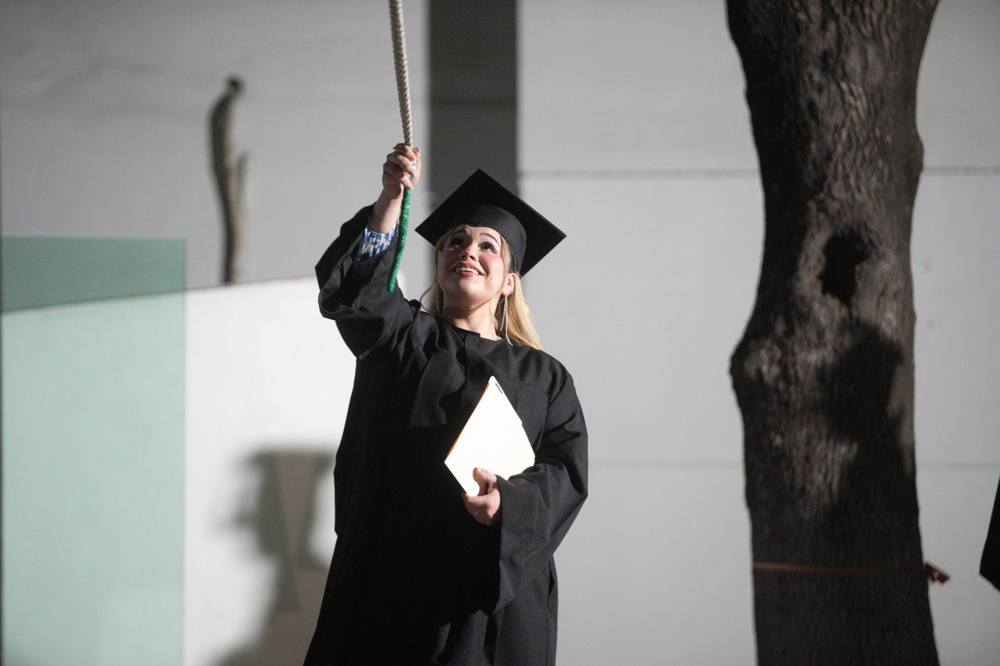

PANADEROSO: HORNEANDO EXITOS
Diego Mendez
Una experiencia que se vive comúnmente en la facultad es ver a alguno de nuestros compañeros vendiendo diferentes productos, ya sea en algún grupo estudiantil o incluso en la misma facultad, sine embargo, en muchos casos no conocemos el trasfondo detrás de estos emprendimientos y el esfuerzo necesario para hacer que estos lleguen al éxito.
Por esta razón queremos el día de hoy hablar de una de estas historias de éxito que se dieron en nuestra facultad. En este caso resaltaremos la historia de Alfonso Núñez, quien actualmente está cursando cuarto semestre de la carrera de Ingeniería en Electrónica y Automatización, y quien se dedica a la venta de pan casero, siendo su producto más icónico un delicioso pan con forma de oso.
Nuestro compañero inicio su negocio el pasado 11 de septiembre, con la intención de ayudar a sus padres durante la difícil situación económica en la que se encontraban. Durante todo este tiempo la familia de Alfonso ha sido su motivación y su inspiración, siendo su madre y abuela quienes inspiraron el gusto por la repostería y la panadería en él.
La calidad del producto es uno de los aspectos más importantes para Alfonso, lo cual debido a la complejidad del producto es un gran reto que se podría considerar demasiado para una sola persona. A pesar de esto nuestro compañero ha logrado mantener la calidad del pan alta, siempre ofreciendo un producto fresco y recién horneado a todos sus clientes.
Este logro se debe a un sacrificio muy grande, ya que para poder ofrecer el mejor producto posible nuestro compañero se queda preparándolo hasta altas horas de la noche, llegando incluso a estar preparándolo en la madrugada. Este sacrifico ha dejado sus resultados, siendo que constantemente lleva un producto de alta calidad a la facultad.
Finalmente, nuestro compañero nos comenta su gran agradecimiento por todo el apoyo que ha recibido por parte de la comunidad estudiantil, lo cual lo motiva a seguir adelante, siempre entregando un producto fresco y de calidad, a pesar de la falta de sueño.
CAMPANAZO! SE CELEBRA TRIPLE CEREMONIA DE TITULACION

Marco Arreola
Los pasados 20,21 y 22 de Febrero, la comunidad universitaria se reunió en una emotiva ceremonia de titulación de ingenieros, un evento que marcó el culmen de años de arduo trabajo y dedicación. La ceremonia, que tuvo lugar primeramente en la Sala Polivalente del CIDET para despues realizar el tradicional repique de campana en la plazoleta, fue un momento de celebración y reconocimiento para los graduados, sus familias y profesores.
Tuvimos el placer de entrevistar a uno de los graduados, Jorge Torres, egresado como ingeniero mecanico administrador. Jorge, que actualmente ya cuenta con trabajo como ingeniero en calidad, nos expreso con gran emocion su logro, el cual comento que no podria haber logrado sin la ayuda de sus padres.
A pesar de que le costo mas tiempo del necesario en terminar la carrera, pues la hizo en 12 semestres, comento que se sentia muy reconfortante el llegar hasta donde lo habia hecho. Sus expectativas se cumplieron sin lugar a dudas y comento que todo lo aprendido durante su estadia le ha ayudado en el inicio de su carrera profesional.
Segun sus propias palabras, la facultad ha avanzado muchisimo en cuanto al apoyo que se le proporciona al estudiantes en la era post-pandemia a comparacion de antes, todo sin duda gracias al esfuerzo de los directivos de la FIME.
Por ultimo como consejo para los estudiantes enfatizo que es importante la determinacion y el jamas darse por vencido durante los estudios, puesto que el en carne propia lo sufrio, al dejar en primer semestre todas sus materias, cosa que en aquel momento parecio el fin del mundo. Sin embargo con perseverancia y tras superar ese bache, continuo hasta lograr su objetivo y ahora lo mira atras con una sonrisa, pudiendo sentir la satisfaccion tras todo ese esfuerzo.
La ceremonia de titulación de ingenieros fue un recordatorio de la importancia del trabajo duro, la dedicación y la perseverancia, valores clave en el ingeniero moderno. Ademas tambien fue un momento para celebrar los logros de los graduados y para mirar hacia el futuro con esperanza y optimismo.